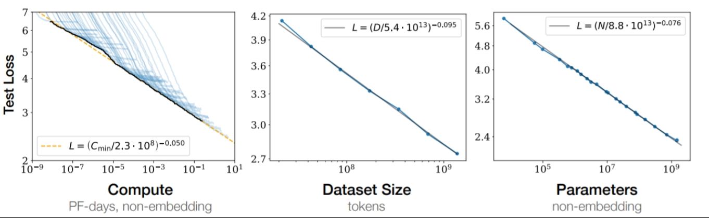

Any comments, contributions, or feedback? Ping me!
Follow @adlrocha Tweet to @adlrocha
@adlrocha - Making sense of the current state of AI
Or rather, my limited view as an outsider.
I’ve been trying to stay up to date (at least at a high level) with all the new developments in the field of AI, but with my full-time job it has been quite a challenge. This can be even more of a challenge when your full-time job is not closely related with the field of AI. My only sources of information these days for all AI-related topics have been Twitter and Hacker News. To make matters worse, my ML background is quite limited and dates back to my college years, so I only understand just half of what I read.
However, in order to start getting up to speed with AI, I realized that it could be a good practice to share the things that I may have learnt that week related to AI (even if they are obvious for experts in the field). This will help me build a mental model of what the hell is happening with AI these days, and how it can be leveraged. “Does this mean that we are back to having weekly publications?" The may be bi-weekly, but this is a first step.
Kid learning about AI and looking at its bright future - SDXL
The trends I see
In these past few months that I’ve been paying a bit more of attention to the field of AI as an outside, these are some of the things I’ve realized:
-
LLMs and foundational models are becoming a commodity: Training an LLM from scratch is really expensive, and only a limited amount of companies with big pockets and access to a lot of hardware will be able to do so (to give you a sense of the scale, phi-2, a “small” LLM with 2.7B parameters took Microsoft 14 days and 96 A100 GPUs). Fortunately, there are already several open foundational models out there. Developers, researchers, and new startups have already done amazing things building upon existing open-source foundational models. These models can already have unprecedented impact, and become the core of really innovative new use cases.
-
Building narrow agents by fine-tuning foundational models is the next frontier: While small teams and developers may not be able to train their own foundational models, they may still build really innovative models to solve narrow (and not that narrow) problems. Companies like OpenAI or Google may be racing towards AGI, but I feel there’s still a lot of value on solving niche day-to-day problems through AI and LLMs. For this, we don’t need AGI or really strong foundational models, fine-tuned version of existing open-source foundational models may be just what that problem needs. By building really good task-specific models we can build small agents that in the future are able to collaborate towards more complex tasks (maybe this is the actual path towards AGI?). There already a good examples of companies being built on top of this task-specific agents like Fixie.ai, for general agent building and orchestration, or Luzia, as a good example of a use-case specific agent built on top of foundational models.
-
Use cases are in exploration mode: I don’t know about you, but while the future use cases and impact of AI as a technology is way clearer than that of blockchain technology (obviously). I still feel we are in a use case exploration phase for LLMs, generative models, and all the new innovations that are being released almost every day. Generative models are already creating breathtaking images and outstanding glimpses of real intelligence and creativity. We’ve found a new superpower, but I am not really sure if we have figured out the best way to use it. ChatGPT et. al are becoming amazing assistants for our day-to-day, but they aren’t yet as good as a good Google search or a well-thought and well-explained Stack Overflow post.
-
Production-ready and scalable deployments of LLM-based apps are hard: I remember that a few years ago there was a lot of AI innovation happening inside Jupyter Notebooks. RL models that were beating humans on Atari games, image recognition systems for any kind of video, etc. All of this work is super useful to advance the state-of-the-art, but it many cases these developments wouldn’t pass the iron test, scaling in production. I think this is one of the most pressing issues for AI in the short/mid-term, and one where researchers, engineers and companies will focus the most in the next year. In order to be able to run LLMs and AI models everywhere, an be able to scale with the current hardware capabilities of ex-big tech companies will require: better quantization, running models in the edge, decentralized AI, improvements in the networking stack, GPU performance, and many other innovative ideas in the works. My feeling is that there is room for non-AI experts to contribute with there expertise in this field: from distributed systems engineers, to compiler, DevOps, and backend engineers.
-
We should worry about alignment: Not only performance will be and issue, but also security and privacy. And I don’t know about you, but this is something that really worries me in the long (and so long) term. There are a lot of things that could go wrong security-wise and that we may not be aware of: from leaking personal information in models, to more catastrophic and existential risk-relate issues. The moment we start connecting complex AI models to the Internet and other real-time sources of information, and we offer them levers to interact with the physical world, things could get messy really quickly. As mentioned above, we found a new superpower of the likes of electricity, fire, or the Internet, and we know this could be huge, but we still don’t know how to use it, and all the detrimental impact it may have. One of the reasons I decided to start getting up to speed with AI again is that I want to start contributing more actively to the problem of AI alignment.
-
We still need humans in the loop: Generative models need new content to improve their performance, and according to recent studies, we may be running out of useful data to train these models. We may end up reaching the a limit of the scaling laws from the side of the dataset size instead of the compute. This means that AIs still need humans to create more data that they can consume to improve their training (as long as we don' t figure out a way to efficiently use artificial data to improve AI model training, which is also an active line of research). Luckily, AI may still need us at least for a bit.
 Illustration of scaling laws
Request for help
In this post I shared my personal observations of what is the current state of development of AI. Obviously, I am an outsider starting to peek into this vast world. In the next few weeks I will start digging deeper into the technology, and (hopefully) getting my hands dirty. Any feedback, help, or valuable pointers on how to start in this field, things I should definitely read (and write) about, please let me know.
Without further ado, I’ll see you around in my next post. Cheers!
Any comments, contributions, or feedback? Ping me!